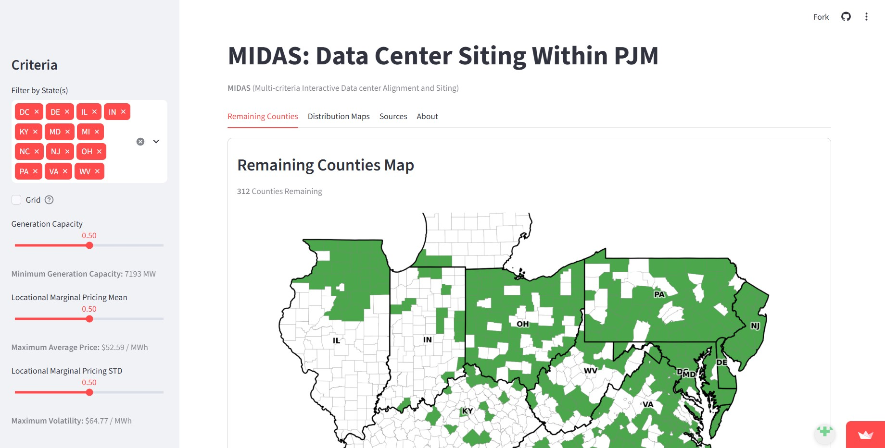

MIDAS, the king who had the curse of having anything be turned to gold whenever he touched it. MIDAS stands for Multi-criteria Interactive Data center Alignment and Siting, this web app is the culmination of my research when I was at Johns Hopkins University for the ROSETAS REU (Research Experience for Undergraduates). Here is a link to access it: MIDAS

To program this website I used Python and Streamlit to host it. The objective of my research was to use an existing dataset, ICARUS, created by my mentor. The dataset includes found data on generators, transmission lines, and data center usage within PJM. PJM (Pennsylvania, New Jersey, and Maryland) is the largest regional transmission organization in the United States, basically it is the governing body that coordinates the electricty market for 12 states and DC. Assigned by my PI, I was tasked with finding viable counties for a new data center using this as my baseline data.
Through my research I discovered that there are a lot of factors that go into finding a viable site for building a data center. There is also different types of data centers not just hyperscale AI data centers. I managed to find usable data for 3 factors: the grid, fiber connectivity, and risk to natural hazard. Now there are a lot more factors that go into selecting a site, these were the ones I used for the scope of my project, but in MIDAS there are other factors you can play around with those including water stress, land availability, and renewable energy. Other critical criteria that was too far out of the scope of this project includes: local community pushback, state tax incentives, etc.
Now, how does the filtering system work? Well, the best analogy to my web app is like browsing for an apartment. On a site like apartments.com you can filter for how many bedrooms, bathrooms, and price. My web app works the same way! The filters are based on percentiles of the data across the 312 counties, for example when filtering for locational marginal pricing of electricty you can set the percentile to be below the 50th, 75th, or whatever you want it to be and it filters out any counties who's electricity prices are larger than the percentile set. You can also see what that price is at that percentile. I used percentiles because it allows for the counties to be compared relative to each other instead of some arbitrary cutoff that I do not have knowledge of. It allows flexibility and allows the user to set their filters.
There are other aspects of the webapp like the remaining counties map, to be completely transparent, this part of the project, heavily used AI. Bubble distributions of the criteria data can also be viewed. Overall this project taught me a lot, mainly Python and how powerful excel is. I think it's a highly relevant issue in today's climate and I'm glad I was able to take a dive into it.